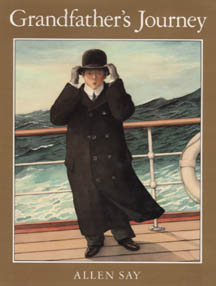

|

|
Grandfather's Journey
by Allen Say
The narrator of this book addresses several topics as he weaves his narrative for us. Choose one of the topics and craft a thoughtful, descriptive response.
- The story opens with these words: "My grandfather was a young man when he left his home in Japan and went to see the world." Have you ever wanted to see the world? What specific places abroad would you especially want to see, and why?
- Grandfather visits the mesas of the American Southwest, the wheat fields of the Midwest, big cities, mountain ranges, and, of course, California, which he liked best. Of all the places that you have visited outside your hometown, which do you like best and why?
- When Grandfather returns to Japan with his family, he buys a house in a large city, even though he was raised in a village. Where would you rather live: in a small town or in a big city? Tell why.
- Why do you suppose Grandfather never kept another songbird after the war? Tell the story of a time you felt something similar and what you did about it.
- The story closes with these words: "I think I know my grandfather now. I miss him very much." Tell the story of a time you understood someone else better because you had been through a similar experience.
- The story tells us something a grandson learned from his grandfather. Tell the story of something valuable you have learned from one of your grandparents.
|